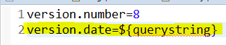

js, css 정적 파일 버전 관리
WAS가 1개일때는 문제가 없지만 2개, 3개 … N개가 되면 새로운 문제가 발생한다.
크게 2가지 문제로 구분할 수 있다.
최신 Back-End와 구 Front-End 의 만남
브라우저 캐싱 <- 사실 WAS가 1개일때도 문제
두가지 문제점은 어떤 이슈를 발생시키나??
깨진다. 웹페이지가 깨진다. 바스락. 와장창. js 또는 css를 제대로 가져오지 못하기 때문.
원인은?
L4로 묶여있는 웹 서버 집단에서 의도적으로 점진적 배포 혹은 일반 배포 단계에서 각 서버의 버전이 불일치 하는 현상이 생긴다. 이 시점에서 HTML과 js, css 요청 서버가 달라지면 서로 호환되지 않아 깨짐현상이 발생한다.
해결방법은?
최신 Back-End와 구 Front-End 의 만남 => 정적 파일 버전 관리
정적 파일 선배포 및 버전관리 후 Back-End 배포하여 배포 당시 시점의 css, js를 정확히 호출하게 한다.
Spring에서의 설정
Spring 프로젝트에 현재 정적파일의 버전 정보가 추가되어야 한다.
version.properties에서 관리하기로 한다.

version.number로 정적 파일의 빌드 버전을 관리한다. 밑의 version.date는 아래의 브라우저 캐싱에서 소개한다.
이제 jsp에서 정적파일 버전을 결정할 수 있도록 path에 추가한다.
이제 js, css를 수정했을 경우 version.properties에서 version.number 값을 증가시켜서 배포하면 된다
배포 서버에서의 설정
버전관리를 위해 Spring에서 Resource 경로를 /{버전번호}/resources 를 참조하도록 변경했다.
그러려면 서버에서는 수동으로 version number 디렉토리 만들고 정적파일들 cp로 옮기고 권한 부여하고 뭐하고 뭐하고 뭐하고….. ===>> 자동화하자
정적 파일이 존재하는 디렉토리를 다음과 같이 구성한다

BIULD_NUMBER는 현재 사용하고 있는 정적파일의 버전을 갖고 있는다
그러면 이제 스크립트를 통해 한방에 빠르게!! 정적파일만 선배포 할 준비가 끝났다
1 | cd ~/web-resource |
BUILD_NUMBER 에서 현재 빌드 번호를 가져오고 + 1 해서 새로운 버전의 디렉토리를 만든다.
이렇게 되면 배포시점에 HTML과 js,css 등 정적파일 매칭이 이루어지기 때문에 구서버, 신서버가 L4아래 함께있어도 호환 가능하다.
이거로 문제가 다 해결되나?
그렇지 않다. 서버에서 버전에 맞는 css, js파일을 골라서 전해준다고 해도 클라이언트에서 요청하지 않으면 줄리가 없지.
브라우저에는 캐싱기능이 있다.
브라우저는 http://서비스주소/파일명.js 이렇게 다운받고 보관하고있다가 같은 URL 요청시 새로 요청을 하지 않는다. 그 기간과 상세부분은 브라우저마다 다를 수 있다.
서버가 새로운 버전으로 업데이트 되었지만 파일명이 그대로라면?
js, css의 URL이 그대로다. 브라우저는 새로 바뀐걸 모른다. 안받는다 => 와장창
서버는 이 파일이 업데이트 되었는지 어떻게 클라이언트에게 알려줘야할까?
브라우저는 URL을 기준으로 갖는다. 즉 URL이 다르면 새로 받는다.
그렇다면 서버를 업데이트 할 때마다 정적 파일들을 새로운 버전의 디렉토리에 넣어야하나?
변수명을 바꾸고 공백을 지우고 정말 사소한건데도 리소스가 증가해야만하나!?
편한 방법으로 클라이언트가 새로운 파일을 요청하도록 하게 하려면 어떻게 해야할까
쿼리스트링을 통해 배포 이후 웹 서비스 접근시 css, js를 새로 내려받도록 한다.
기존의 URL이 http://서비스주소/파일명.js 이렇게 생겼다고 할 때
기존 URL 대신 http://서비스주소/파일명.js?param=JingyuJung 이렇게 요청을 보내면 어떻게 될까?
파일명.js 라는 같은 파일을 요청하지만 뒤에 파라미터로 URL이 추가되었다.
=> 파일이 수정되었을 때 param={값} 이부분을 수정하면 파일명의 변경 없이도 클라이언트가 파일을 새로 받게 할 수 있지 않을까?
무슨 값을 넣어야 할까?
HTML과 js, css가 매칭되는 시점은 maven 빌드타이밍이 적절하다고 생각한다.
그렇다면 파라미터에 maven 빌드타임을 넣으면 좋을 것 같다.
메이븐 빌드타임 정보를 가져오기 위해 pom.xml에 다음의 플러그인과 설정을 추가한다.
1 | <plugin> |
1 | <properties> |
이렇게 하면
이제 version.properties에 다음의 정보를 추가할 수 있다.

${quertstring} 은 mvn package 타임에 yyyMMdd 형태의 날짜 데이터로 변환된다.
그러면 이제 spring context 타이밍에 쿼리스트링을 붙을 차례다

정적 파일뒤에 spring tag를 이용해 쿼리스트링을 추가해준다.
참고!! : spring 태그를 사용하기 위해서는 다음과 같은 라인을 jsp에 추가해야 한다

두가지 방법이 차이가 뭔지 모르겠고 하나만 써도 되는거 아닌가?
둘 다 써야 한다.
두 가지의 차이점을 구분하려면 기준을 잘 정해야 한다.
- 하위 호환이 가능하다 *
수정한 js, css의 내용이 구버전과 신버전이 호환이 가능하다면 쿼리스트링으로 충분하기도 하다.
하위 호환이 불가능하다면 무조건 새로운 버전의 js, css가 필요하기 때문에 다른 디렉토리에 새로운 js, css를 복사해야하며 클라이언트가 새로운 파일을 받도록 쿼리스트링을 붙인다.
즉, 새로 WAS 배포시
쿼리스트링(필수) + 정적 파일 버전 업(옵션) 이라고 생각하면 될 것 같다.